Sports, Teams, Language, Life!
It’s been a busy summer, and more importantly, a fruitful one. We’re still processing all that’s happened… but we’re thankful nonetheless and love sharing with our fellow brothers and sisters what God has been doing.
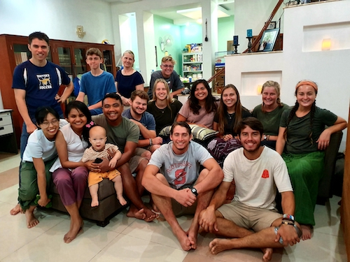 With the GO Team!
Master’s University GO Team
Towards the end of May, Master’s University in Santa Clarita, CA sent a short-term team of 9 (students and alumni) to take part in ministry in Cambodia! We got to house some of them during their time in Phnom Penh and even travel a bit with them to different parts of Cambodia as they taught English, de-liced children, and shared Christ’s love with Cambodians.
During their stay, we were encouraged by their hearts for missions, their desire to serve despite health difficulties faced here, and it was just a lot of fun! Every time I encounter people or ministries related to Master’s University, I am more and more grateful for the work being done by faithful servants at Master’s!
Sports Camp
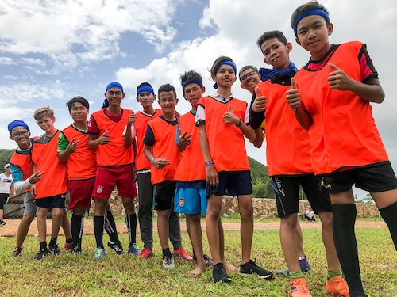 Some of the kids during soccer practice We were able to take part in a sports camp that our church organized for youth (ages 12ish-18, incidentally, all boys) in a province by the beach! This was the first time our church had ever hosted an event like this, as well as the first time for most of the students that joined. It was directed by a church member who used a curriculum created by FCA (Fellowship of Christian Athletes). Our church also received help from a short-term team from the Philippines. We were so encouraged to see the hard work put in my members of our church (and our pastor) and how smoothly everything went. They taught the basics of the Gospel during teaching sessions starting with creation, sin, Christ’s sacrifice and His resurrection, which offered Ryan an amazing opportunity to teach about Christ’s role in God’s plan.
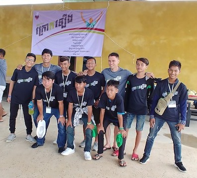 Ryan and his small group It seems that many of the kids were interested and by the end of the camp, there were 5-10 students who publicly confessed Christ! We are thankful, not only for this initial step, but that there is continued follow-up with these kids even now. The sports ministry still meets every Sunday to have a time of games, relationship-building, biblical teaching and soccer training afterwards. There are about three or four men from our church who are trying to reach out to these boys and keep up with them, making sure they are connected to local churches. Ryan was able to be a small group leader during the camp, with the same group of boys he shared a cabin with, allowing them more time to become closer and have opportunities for intentional conversation. Now, Ryan is not as involved with the weekly sports camp, but we hope to continue the relationships we have made with some of the boys at the camp.
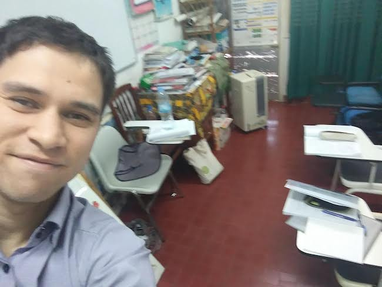 When the ladies need to use the bathroom
One more week of Khmer class!
We made it (kind of)! We’re in the last language class that our program offers– level four. Our class right now, has a total of four students! This was a little odd at first, but we are grateful for our teacher who really pushes our vocabulary and listening comprehension just because she loves to talk so much! She seems to be a very open person and has talked about and asked about our beliefs, practices, etc. We gave her a Gospel tract, which she gladly received, but we are hoping that there will be more opportunities before class ends to talk with her more.
We will conclude this level at the end of September, but we are planning to try to audit some classes at the Bible college nearby starting in October. This will help us continue language-learning, more specifically, in a Christian setting as opposed to on the street. It will also help with understanding culture and hopefully getting a glimpse of what Christianity is like all over Cambodia, as other students will be from different parts of Cambodia. Our pastor and another layperson at our church also teach at the Bible college, so hopefully we can further our relationships with them as well.
ACTION Cambodia
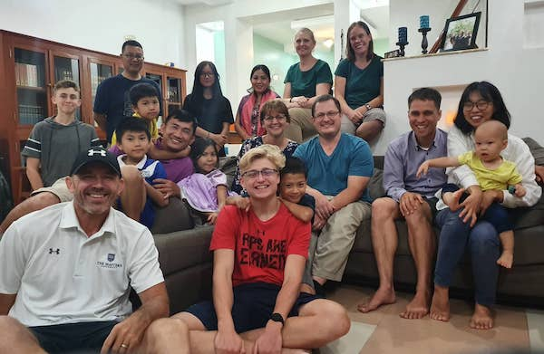 Our new ACTION team, missing a few people The past few months have been very eventful for our team here in Cambodia. We have had three family additions to our team, more than doubling the size! Two families will be working at a local Christian school, and one will be focusing on work with the Shalom churches. In addition, Chhinho Saing has continued to transition into his role as team leader, which has been an encouragement to see as well.
At the same time, it has been a bit rocky for these new families as they transition to life here. We haven’t had much time to get to know all of them, but are thankful for our unity in Christ and that we are working together for Christ far away from home. One family has moved into the house right next to us and have children around Jonathan’s age, which has been wonderful! We are grateful for our team especially due to various challenges in our own family these past couple months.
Health
After our first miscarriage in early July, we found out that Rebekah was pregnant again towards the beginning of August. A few weeks later, around the time we were guessing she was about due for her first check-up (eight weeks), we learned from the doctor that she had twins. However, one was struggling in development and was likely to miscarry. The doctor put Rebekah on bedrest. After a second visit later that week, we found out the weaker baby’s heart had already stopped and were still prescribed lots of rest in order to protect the second twin– the biggest limitation being not carrying anything more than six pounds, including Jonathan. We are nearing the end of medication and bedrest (hopefully), but a couple days ago we had a little scare which included another visit to the hospital.
Overall, it looks like the remaining baby is still growing and doing better. Ryan has been a bit overwhelmed with taking care of more household duties and watching Jonathan, being around any time I would have to pick him up (baths, high chair, stairs, crib, etc.). We are thankful for people who have offered meals and for our babysitter who has extended some hours to help us with Jonathan and around the house.
At times, we don’t know exactly what God is teaching us or how He is growing us and it seems like it’s all too much, but the Lord reminds of how trustworthy He is and how we are nothing apart from Him. And when we don’t know how to process what’s happened or how to pray, we know that the Spirit intercedes for us and we feel as though we groan with Him. We thank God for how He sustains us each day, and reveals more of His majesty to us each day, that we may be more and more occupied with beholding Him than ourselves.
 A group photo with the women at the church anniversary
A group photo with the women at the church anniversary
Praises and Thanksgivings
- Our church celebrated its 17th anniversary which we were able to help out with here and there. It was a good time for fellowship and for remembering God’s sovereignty.
- Pastor Chhinho is moving foward with plans for our house in Mondulkiri, so we’re continuing to plan for that!
- We’re trying to become more consistently involved with our small groups and the relationships formed through them. Through these small groups, we’ve been spiritually encouraged by God’s Word and other believers, we’ve been learning about what it’s like to be a Christian in Cambodia and how to love and edify those around us. God is good!
- We were able to join in on a family retreat with some local pastors and ministry workers (from Phnom Penh) in Mondulkiri. It was refreshing to spend time with these other families and there were some marriage workshops led by a missionary couple from Singapore, originally from the States.
Prayer Requests
- For the Church in Cambodia, that we would all grow in the knowledge of our Lord Jesus Christ through His Word.
- For students at the sports camp, that the Word they heard would sprout, grow, and bear fruit
- For leaders at the sports camp, that they would have opportunities to continue following up with the students.
- Rebekah and the baby’s health
- For our emotional and spiritual health, that this would be a time of internal peace, patience, and growth regardless of external circumstances
- That we would discern what we need to prioritize and what we need to turn down/cancel as our capacity and circumstances change.
- That we would be a light and encouragement to our neighbors and church members and that God would use the circumstances for His glory.
- For the changing team dynamic, that we would have one mind and heart as we labor for the gospel.
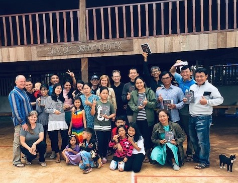 At the Dream Center for the family retreat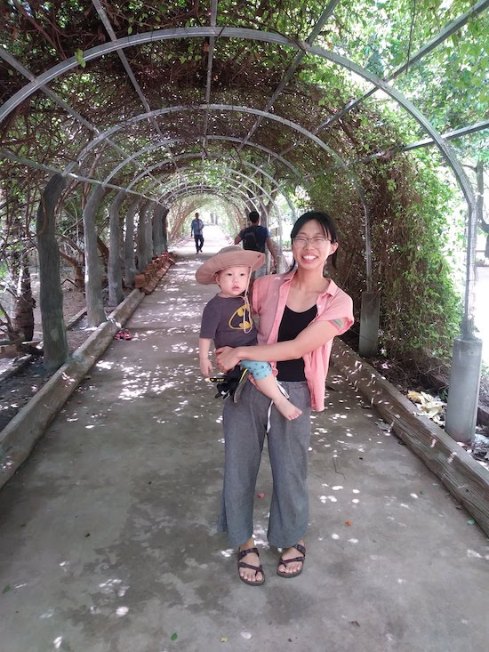 Outing with Ryan’s tutor to Silk Island (not pictured)
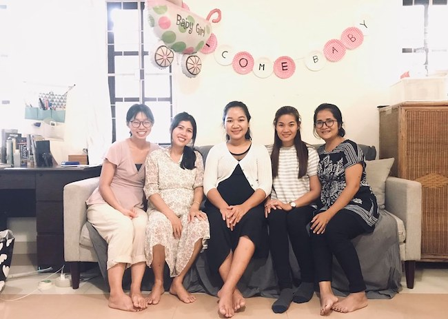 A baby shower for a church member and friend! 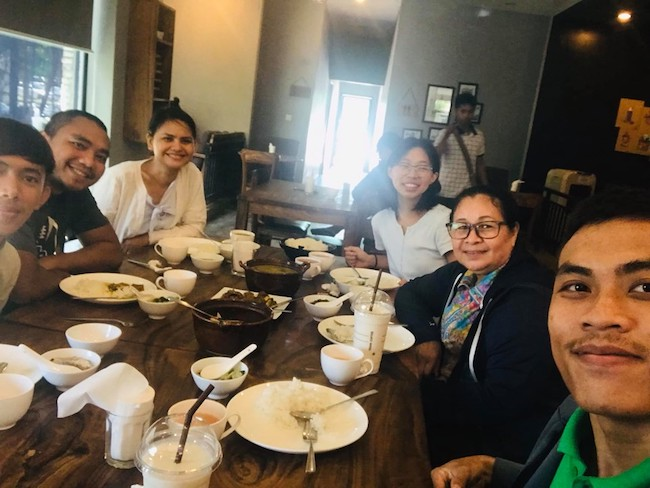 Birthday meal for our babysitter/helper/Cambodian mom
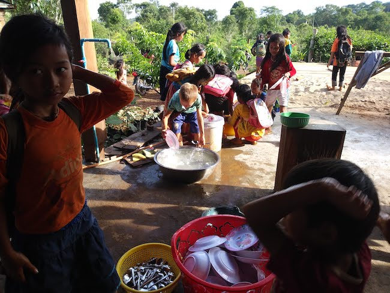 Kids at the Dream Center do their own dishes after a meal is provided for them 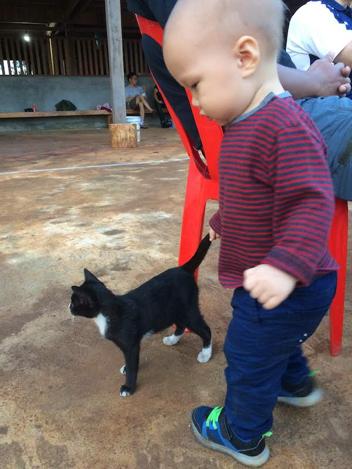 Jonathan and his new best friend